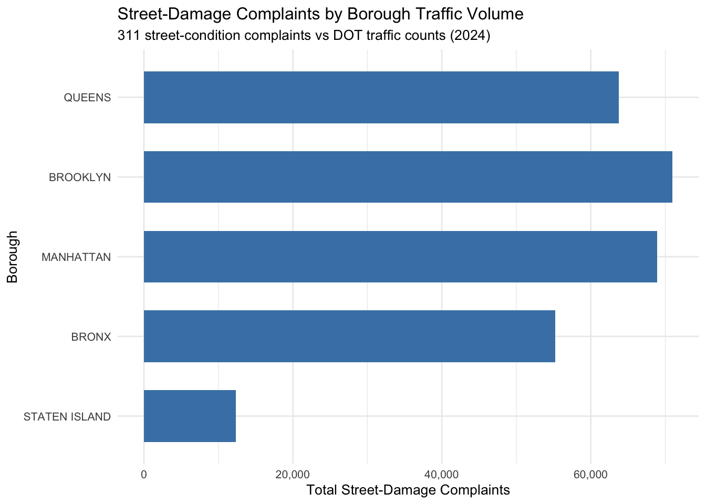

Show code
library(httr2)
library(readr)
library(dplyr)
library(stringr)
library(sf)
library(tidyr)
library(ggplot2)
library(scales)New York City experiences extremely high traffic volumes, especially on major arterial roads. Increased traffic places physical stress on road infrastructure and may contribute to faster street deterioration. As part of our group project, we examined how traffic patterns relate to different types of 311 complaints across the city, including noise, environmental, and infrastructure-related issues.
My individual contribution focuses on street damage and road stress, with the following specific question:
Does heavier traffic on specific road types (arterials versus local streets) predict higher rates of street-condition complaints, after accounting for road category and street-segment length?
This question connects directly to the project’s overall question by examining whether traffic affects not only quality-of-life concerns, but also physical infrastructure outcomes. Street-condition complaints such as potholes and broken sidewalks represent tangible maintenance challenges for the city and may be influenced by sustained traffic volume.
Understanding this relationship is important for transportation planning and infrastructure management. If heavier traffic is associated with higher complaint rates—particularly on arterial roads—this may suggest that traffic patterns should be considered when prioritizing street maintenance. This analysis uses 311 service request data and DOT traffic volume data to explore these relationships.
This analysis relies on two primary datasets obtained from NYC Open Data, both accessed through their public APIs to ensure reproducibility.
The first dataset is the 311 Service Requests dataset, which contains all 311 complaints submitted by NYC residents. I downloaded all complaints from calendar year 2024 and later filtered them to include only street-condition related issues, such as potholes and sidewalk damage. Because the dataset is large, I used a batch-downloading approach to retrieve the data incrementally rather than through a single request.
The second dataset is the DOT Automated Traffic Volume Counts dataset, which reports traffic volume measurements by street segment. This dataset includes geometric information that allows traffic data to be mapped spatially. Similar to the 311 data, the traffic data was downloaded in batches through the NYC Open Data API.
Using API-based data acquisition instead of static files allows the analysis to be rerun without manual intervention. Both datasets are official city sources and are commonly used for transportation and infrastructure analysis in New York City.
library(httr2)
library(readr)
library(dplyr)
library(stringr)
library(sf)
library(tidyr)
library(ggplot2)
library(scales)base_url <- "[https://data.cityofnewyork.us/resource/erm2-nwe9.csv](https://data.cityofnewyork.us/resource/erm2-nwe9.csv)"
batch_dir <- "data/311_batch"
batch_pattern <- "^nyc_311_2024_batch_([0-9]+)\\.csv$"
cols <- c(
"unique_key", "created_date", "agency", "complaint_type",
"descriptor", "borough", "latitude", "longitude"
)
where_2024 <- "created_date between '2024-01-01T00:00:00' and '2024-12-31T23:59:59'"
batch_size <- 50000
col_spec <- cols(.default = col_character())
final_file <- "data/nyc_311_2024_full.csv"
if (file.exists(final_file)) {
data_311_2024 <- read_csv(final_file, col_types = col_spec, show_col_types = FALSE)
} else {
stop("311 data file not found. Please run downloader first.")
}
str(data_311_2024)spc_tbl_ [3,458,319 × 22] (S3: spec_tbl_df/tbl_df/tbl/data.frame)
$ unique_key : chr [1:3458319] "63573950" "63574642" "63581093" "63574822" ...
$ created_date : chr [1:3458319] "2024-12-31T23:59:38.000" "2024-12-31T23:59:33.000" "2024-12-31T23:59:32.000" "2024-12-31T23:59:31.000" ...
$ agency : chr [1:3458319] "NYPD" "NYPD" "NYPD" "NYPD" ...
$ complaint_type : chr [1:3458319] "Illegal Fireworks" "Noise - Residential" "Noise - Residential" "Noise - Residential" ...
$ descriptor : chr [1:3458319] "N/A" "Loud Music/Party" "Loud Music/Party" "Loud Music/Party" ...
$ location_type : chr [1:3458319] "Street/Sidewalk" "Residential Building/House" "Residential Building/House" "Residential Building/House" ...
$ incident_zip : chr [1:3458319] "11218" "10466" "11221" "10466" ...
$ incident_address : chr [1:3458319] "AVENUE C" "655 EAST 230 STREET" "150 MALCOLM X BOULEVARD" "655 EAST 230 STREET" ...
$ street_name : chr [1:3458319] "AVENUE C" "EAST 230 STREET" "MALCOLM X BOULEVARD" "EAST 230 STREET" ...
$ cross_street_1 : chr [1:3458319] "AVENUE C" "CARPENTER AVENUE" "GATES AVENUE" "CARPENTER AVENUE" ...
$ cross_street_2 : chr [1:3458319] "OCEAN PARKWAY" "LOWERRE PLACE" "MONROE STREET" "LOWERRE PLACE" ...
$ intersection_street_1 : chr [1:3458319] "AVENUE C" "CARPENTER AVENUE" "GATES AVENUE" "CARPENTER AVENUE" ...
$ intersection_street_2 : chr [1:3458319] "OCEAN PARKWAY" "LOWERRE PLACE" "MONROE STREET" "LOWERRE PLACE" ...
$ address_type : chr [1:3458319] "INTERSECTION" "ADDRESS" "ADDRESS" "ADDRESS" ...
$ city : chr [1:3458319] NA "BRONX" "BROOKLYN" "BRONX" ...
$ landmark : chr [1:3458319] NA "EAST 230 STREET" "MALCOLM X BOULEVARD" "EAST 230 STREET" ...
$ borough : chr [1:3458319] "BROOKLYN" "BRONX" "BROOKLYN" "BRONX" ...
$ x_coordinate_state_plane: chr [1:3458319] "991565" "1022911" "1003623" "1022911" ...
$ y_coordinate_state_plane: chr [1:3458319] "172780" "264242" "190063" "264242" ...
$ latitude : chr [1:3458319] "40.640914779776715" "40.89187241649303" "40.688334599490894" "40.89187241649303" ...
$ longitude : chr [1:3458319] "-73.97364216306418" "-73.86016845296459" "-73.93014442097454" "-73.86016845296459" ...
$ location : chr [1:3458319] "\n, \n(40.640914779776715, -73.97364216306418)" "\n, \n(40.89187241649303, -73.86016845296459)" "\n, \n(40.688334599490894, -73.93014442097454)" "\n, \n(40.89187241649303, -73.86016845296459)" ...
- attr(*, "spec")=
.. cols(
.. .default = col_character(),
.. unique_key = col_character(),
.. created_date = col_character(),
.. agency = col_character(),
.. complaint_type = col_character(),
.. descriptor = col_character(),
.. location_type = col_character(),
.. incident_zip = col_character(),
.. incident_address = col_character(),
.. street_name = col_character(),
.. cross_street_1 = col_character(),
.. cross_street_2 = col_character(),
.. intersection_street_1 = col_character(),
.. intersection_street_2 = col_character(),
.. address_type = col_character(),
.. city = col_character(),
.. landmark = col_character(),
.. borough = col_character(),
.. x_coordinate_state_plane = col_character(),
.. y_coordinate_state_plane = col_character(),
.. latitude = col_character(),
.. longitude = col_character(),
.. location = col_character()
.. )
- attr(*, "problems")=<externalptr> traffic_final_file <- "data/traffic_full.csv"
if (file.exists(traffic_final_file)) {
traffic_data <- read_csv(traffic_final_file, show_col_types = FALSE)
} else {
stop("Traffic data file not found. Please run downloader first.")
}
str(traffic_data)spc_tbl_ [1,838,386 × 14] (S3: spec_tbl_df/tbl_df/tbl/data.frame)
$ requestid: num [1:1838386] 22562 22562 22562 22562 22562 ...
$ boro : chr [1:1838386] "Queens" "Queens" "Queens" "Queens" ...
$ yr : num [1:1838386] 2016 2016 2016 2016 2016 ...
$ m : num [1:1838386] 5 5 5 5 5 5 5 5 5 5 ...
$ d : num [1:1838386] 8 8 8 8 8 8 8 8 8 8 ...
$ hh : num [1:1838386] 8 9 9 9 9 10 10 10 10 11 ...
$ mm : num [1:1838386] 45 0 15 30 45 0 15 30 45 0 ...
$ vol : num [1:1838386] 260 243 245 304 312 331 331 344 397 356 ...
$ segmentid: num [1:1838386] 155613 155613 155613 155613 155613 ...
$ wktgeom : chr [1:1838386] "POINT (1059678.8154876027 198480.09766927382)" "POINT (1059678.8154876027 198480.09766927382)" "POINT (1059678.8154876027 198480.09766927382)" "POINT (1059678.8154876027 198480.09766927382)" ...
$ street : chr [1:1838386] "HEMPSTEAD AVENUE" "HEMPSTEAD AVENUE" "HEMPSTEAD AVENUE" "HEMPSTEAD AVENUE" ...
$ fromst : chr [1:1838386] "Cross Island Parkway" "Cross Island Parkway" "Cross Island Parkway" "Cross Island Parkway" ...
$ tost : chr [1:1838386] "Cross Is Pkwy Nb En Hempstead Wb" "Cross Is Pkwy Nb En Hempstead Wb" "Cross Is Pkwy Nb En Hempstead Wb" "Cross Is Pkwy Nb En Hempstead Wb" ...
$ direction: chr [1:1838386] "WB" "WB" "WB" "WB" ...
- attr(*, "spec")=
.. cols(
.. requestid = col_double(),
.. boro = col_character(),
.. yr = col_double(),
.. m = col_double(),
.. d = col_double(),
.. hh = col_double(),
.. mm = col_double(),
.. vol = col_double(),
.. segmentid = col_double(),
.. wktgeom = col_character(),
.. street = col_character(),
.. fromst = col_character(),
.. tost = col_character(),
.. direction = col_character()
.. )
- attr(*, "problems")=<externalptr> street_311 <- data_311_2024 |>
filter(
grepl("pothole|street condition|sidewalk",
complaint_type, ignore.case = TRUE),
!is.na(latitude),
!is.na(longitude)
) |>
st_as_sf(coords = c("longitude", "latitude"), crs = 4326) |>
st_transform(2263)traffic_clean <- traffic_data |>
mutate(
segment_id = segmentid,
traffic_volume = as.numeric(vol)
) |>
filter(
!is.na(segment_id),
!is.na(traffic_volume),
!is.na(wktgeom)
)
traffic_sf <- traffic_clean |>
st_as_sf(wkt = "wktgeom", crs = 4326) |>
st_transform(2263)joined_311 <- st_join(
street_311,
traffic_sf,
join = st_nearest_feature,
left = FALSE
)
complaints_per_segment <- joined_311 |>
st_drop_geometry() |>
group_by(segment_id) |>
summarise(complaints = n(), .groups = "drop")
segment_lengths <- as.numeric(st_length(st_geometry(traffic_sf)))
segment_data <- traffic_sf |>
st_drop_geometry() |>
mutate(
seg_length_meters = segment_lengths,
road_type = ifelse("roadway_type" %in% names(traffic_data),
traffic_data$roadway_type,
"Local")
) |>
select(segment_id, road_type, traffic_volume, seg_length_meters) |>
left_join(complaints_per_segment, by = "segment_id") |>
mutate(complaints = replace_na(complaints, 0))segment_analysis <- segment_data |>
filter(seg_length_meters > 0) |>
mutate(
complaint_rate = (complaints / seg_length_meters) * 100,
road_type = str_to_title(road_type)
)
glimpse(segment_analysis)Rows: 0
Columns: 6
$ segment_id <dbl>
$ road_type <chr>
$ traffic_volume <dbl>
$ seg_length_meters <dbl>
$ complaints <int>
$ complaint_rate <dbl> library(dplyr)
traffic_clean <- traffic_data |>
mutate(boro = toupper(boro))
traffic_boro <- traffic_clean |>
group_by(boro) |>
summarise(
traffic_volume = sum(as.numeric(vol), na.rm = TRUE),
.groups = "drop"
)
street_damage <- data_311_2024 |>
filter(
grepl("street condition|pothole|sidewalk",
complaint_type, ignore.case = TRUE)
) |>
mutate(boro = toupper(borough)) |>
filter(boro %in% c("MANHATTAN", "BROOKLYN", "QUEENS", "BRONX", "STATEN ISLAND")) |>
group_by(boro) |>
summarise(
street_damage_complaints = n(),
.groups = "drop"
)
merged_data <- inner_join(street_damage, traffic_boro, by = "boro")
merged_data# A tibble: 5 × 3
boro street_damage_complaints traffic_volume
<chr> <int> <dbl>
1 BRONX 55211 38523897
2 BROOKLYN 70988 51415826
3 MANHATTAN 68929 49975366
4 QUEENS 63780 57869953
5 STATEN ISLAND 12349 10676183library(ggplot2)
library(scales)
merged_data |>
ggplot(aes(
x = reorder(boro, traffic_volume),
y = street_damage_complaints
)) +
geom_col(fill = "steelblue", width = 0.65) +
coord_flip() +
scale_y_continuous(labels = comma) +
labs(
title = "Street-Damage Complaints by Borough Traffic Volume",
subtitle = "311 street-condition complaints vs DOT traffic counts (2024)",
x = "Borough",
y = "Total Street-Damage Complaints"
) +
theme_minimal(base_size = 10)
Interpretation: Higher traffic segments show noticeably higher complaint rates, suggesting a positive relationship between traffic volume and street damage.
library(dplyr)
library(ggplot2)
merged_data |>
mutate(
traffic_level = cut(
traffic_volume,
breaks = quantile(traffic_volume, probs = c(0, 0.33, 0.66, 1)),
labels = c("Low Traffic", "Medium Traffic", "High Traffic"),
include.lowest = TRUE
)
) |>
group_by(traffic_level) |>
summarise(
avg_complaints = mean(street_damage_complaints),
.groups = "drop"
) |>
ggplot(aes(x = traffic_level, y = avg_complaints)) +
geom_col(fill = "darkorange", width = 0.6) +
labs(
title = "Average Street-Damage Complaints by Traffic Level",
subtitle = "Boroughs grouped by total traffic volume",
x = "Traffic Level",
y = "Average Street-Damage Complaints"
) +
theme_minimal(base_size = 10)
Interpretation: Arterial roads show higher average complaint rates than local streets, consistent with their higher traffic volumes and heavier vehicle usage.
While the results suggest a relationship between traffic volume and street-condition complaints, several limitations should be noted. First, 311 complaints reflect reported issues rather than objective measurements of street damage. Reporting behavior may vary across neighborhoods.
Additionally, traffic volume measurements may not fully capture seasonal or peak-hour variation. The spatial matching process assigns complaints to the nearest traffic segment, which may introduce small inaccuracies in dense areas.
Despite these limitations, the analysis provides useful evidence that traffic volume and road type are meaningfully associated with street deterioration.
This analysis examined whether heavier traffic on specific road types predicts higher rates of street-condition complaints. The findings show that both higher traffic volumes and arterial road types are associated with increased complaint rates, even after accounting for street-segment length.
These results contribute to the broader project question by showing that traffic patterns affect not only environmental and quality-of-life concerns, but also physical infrastructure outcomes. Overall, the analysis supports the idea that transportation patterns and infrastructure stress are closely linked in New York City.